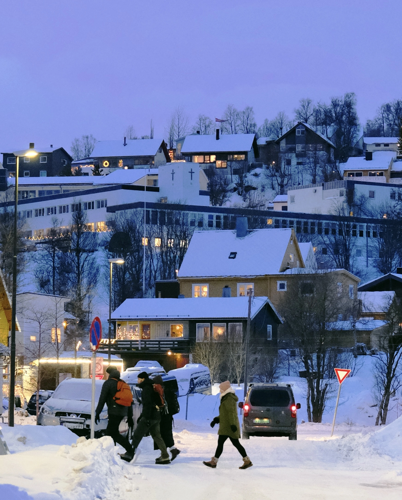

Photos
Find me on Instagram and Xiaohongshu
-
Into the blue hour of the Arctic Circle
Tromsø, Troms og Finnmark, Norge
January 2, 2025

-
The fairytale world of the far north
Lofoten, Nordland, Norge
December 27, 2024


-
2024 Magistrale and IC Graduation Ceremony
Lausanne, Vaud, Suisse
October 5, 2024
-
A rain turning a city upside down
Venezia, Veneto, Italia
August 3, 2023

-
Lake Oeschinen
Kandersteg, Bern, Schweiz
July 30, 2023
-
A vessel gliding across Lake Geneva
Saint-Sulpice, Vaud, Suisse
February 13, 2023
-
Pisa Cathedral and Leaning Tower of Pisa
Pisa, Toscana, Italia
July 17, 2022
-
Ponte alle Grazie
Firenze, Toscana, Italia
July 16, 2022
-
Nightfall in Rome
Roma, Lazio, Italia
July 14, 2022